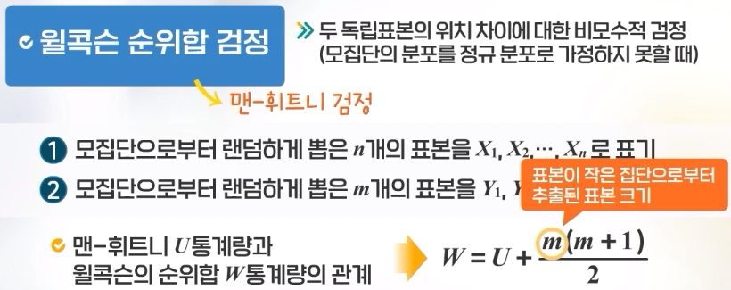

어떤 이들은 한국 청소년들의 하루 평균 TV 시청 시간이 3시간이라 주장하고, 다른 이들은 공부하느라 시청 시간이 3시간이 안될 것이라 주장하고 있다. 어느 편이 맞는지 알아보기 위하여 단순임의 추출한 100명을 조사한 결과 평균이 2.75시간이었다. TV 시청 시간은 정규분포를 하며 분산은 과거 조사에서 1로 알려져 있다.
# p값이 σ=0.05보다 작으므로 귀무가설을 기각하게 되어 # 청소년들의 하루 평균 TV 시청 시간이 3시간이라고 할 수 없다.
\(\sigma\)를 모르는 경우
건강한 성인의 콜레스테롤 수치는 220 이하라고 한다. 콜레스테롤이 높은 사람은 심장마비가 발생할 가능성이 더 높은 것으로 알려져 있다. 이를 확인하기 위해 30명의 심장마비 환자를 조사하여 평균 콜레스테롤이 231이며, 표준편차가 20인 것을 알아냈다. 심장마비 환자들의 평균 콜레스테롤은 정상인의 평균 콜레스테롤보다 높은 수치라고 결론내릴 수 있는가?
t_test <-function(alpha, mu0, xbar, s, n){ se = s/sqrt(n) t = (xbar-mu0)/se cr =qt(1-alpha, df=n-1) p_value =pt(t, df= n-1, lower.tail=F)if(p_value < alpha) result ="Reject H0"else result ="Accept H0"print(paste("Hypothesis testing for H0: mu = ",mu0,"or Ha: mu > ",mu0))print(c(paste("t Statistics is ", round(t,4), "and Critical Region is ", round(cr, 4)), paste("p-value =", round(p_value,4))))print(paste(result, "at significance level", alpha))}t_test(0.05, 220, 231, 20, 30)
[1] "Hypothesis testing for H0: mu = 220 or Ha: mu > 220"
[1] "t Statistics is 3.0125 and Critical Region is 1.6991"
[2] "p-value = 0.0027"
[1] "Reject H0 at significance level 0.05"
# p값이 σ=0.05보다 작으므로 귀무가설을 기각하게 되어 # 심장마비 환자들의 평균 콜레스테롤은 정상의 평균 콜레스테롤보다 높다고 결론을 내린다.
MASS 라이브러리에 있는 Cars93의 연료탱크용량의 모평균 추정하기(t검정)
library(MASS)fuel = Cars93$Fuel.tank.capacity## mu of fuel is 16.# H0: mu = 16# H1: mu is not 16 (양측검정)## normality testhist(fuel) # 좌우대칭인지 대략적으로 살펴보기
Shapiro-Wilk normality test
data: fuel
W = 0.98341, p-value = 0.287
## 1. hypothesis H0 : mu=16 H1 : mu is not 16## 2. alpha = 0/05## 3. test statistic = barX ~ N()## 4. p## 5. alpha > p ==> H0 rejectt.test(fuel, mu=16, alternative ='two.sided') # p=0.5372 > 0.5이므로 H0를 기각할 수 없고, 즉 연료탱크 용량의 평균은 16이라 할 수 있음
One Sample t-test
data: fuel
t = 1.9541, df = 92, p-value = 0.05372
alternative hypothesis: true mean is not equal to 16
95 percent confidence interval:
15.98914 17.33989
sample estimates:
mean of x
16.66452
t.test(fuel, mu=16, alternative ='greater') # p=0.02686 < 0.5이므로 H0를 기각하고, 즉 연료탱크 용량의 평균은 16보다 큼(단측검정이 양측검정보다 귀무가설을 기각하기 쉬움)
One Sample t-test
data: fuel
t = 1.9541, df = 92, p-value = 0.02686
alternative hypothesis: true mean is greater than 16
95 percent confidence interval:
16.09949 Inf
sample estimates:
mean of x
16.66452
t.test(fuel, mu=16, alternative ='less') # p=0.9731 > 0.5이므로 H0를 채택한다. 즉 연료탱크 용량의 평균은 16보다 작지 않음
One Sample t-test
data: fuel
t = 1.9541, df = 92, p-value = 0.9731
alternative hypothesis: true mean is less than 16
95 percent confidence interval:
-Inf 17.22955
sample estimates:
mean of x
16.66452
MASS 라이브러리에 있는 Cars93의 가격의 모평균 추정하기(비모수적 방법)
library(MASS)price = Cars93$Price## mu of fuel is 16.# H0: mu = 16# H1: mu is not 16 (양측검정)## normality testhist(price) # 좌우대칭인지 대략적으로 살펴보기
shapiro.test(price) # alpha > p ==> H0 reject인데, p=0.0000004235이므로 정규분포를 따른다고 할 수 없음
Shapiro-Wilk normality test
data: price
W = 0.88051, p-value = 4.235e-07
## Cars93$Price, nor normal dist~, n>30이면 중심극한정리에 의해 표본평균의 정규성을 활용하여 검정## n<30(소표본) ==> non-parametric test of one sample(비모수적 방법)# 1. hypothesis H0 : mu=19 H1 : mu is not 19# 2. alpha = 0/05wilcox.test(price, mu=19, alternative ='two.sided') # 윌콕슨의 부호순위검정, alpha=0.05 > p ==> H0 reject인데, p=0.4701이므로 price의 평균은 19라 할 수 있음
Wilcoxon signed rank test with continuity correction
data: price
V = 1953, p-value = 0.4701
alternative hypothesis: true location is not equal to 19
wilcox.test(price, mu=19, alternative ='greater') # p=0.7662이므로 price의 평균은 19보다 크지 않음
Wilcoxon signed rank test with continuity correction
data: price
V = 1953, p-value = 0.7662
alternative hypothesis: true location is greater than 19
Wilcoxon signed rank test with continuity correction
data: price
V = 1953, p-value = 0.235
alternative hypothesis: true location is less than 19
모비율 \(p\)에 대한 검정
경기도 어떤 지역에 새로운 지역 신문을 발행하기 위해서는 구독률이 12%를 넘어야 광고주를 안정적으로 확보할 수 있다고 한다. 새로운 지역 신문의 발행을 고심하는 한 신문사에서는 400명의 주민을 대상으로 만약 신문이 발행되면 구독을 할 것인지를 물어서 58명이 구독할 것이라는 답을 얻었다. 새로운 지역 신문의 구독률이 12%를 초과할 것이라고 결론내릴 수 있는가?(유의수준 5% 사용)
prop_test <-function(alpha, p, N, n){ phat = n/N se =sqrt((p*(1-p))/N) z = (phat - p) / se cr =qnorm(1-alpha) p_value =pnorm(z, lower.tail=F)if(p_value < alpha) result ="Reject H0"else result ="Accept H0"print(paste("Hypothesis testing for H0: mu = ",p,"or Ha: mu > ",p))print(c(paste("p_hat is ", round(phat,5), "/ Z Statistics is ", round(z,4),"and Critical Region is ", round(cr, 4)), paste("p-value =", round(p_value,4))))print(paste(result, "at significance level", alpha))}prop_test(0.05, 0.12, 400,58)
[1] "Hypothesis testing for H0: mu = 0.12 or Ha: mu > 0.12"
[1] "p_hat is 0.145 / Z Statistics is 1.5386 and Critical Region is 1.6449"
[2] "p-value = 0.0619"
[1] "Accept H0 at significance level 0.05"
# p값이 유의수준 σ=0.05를 초과하므로 귀무가설을 기각하지 못한다.# 새로운 지역 신문은 구독률이 12%를 초과할 것이라 결론내릴 수 없다.
두 독립 표본 위치 차이 검정
두 독립 표본 위치 차이 검정이란
통계적 가설검정에서 두 독립 모집단에 대한 평균을 비교하는 검증으로,
남녀 간의 성의식 차이
농촌과 도시 간의 주거만족도
수도권과 비수도권의 삶의 만족도
와 같은 것들을, 보통 \(t\)검정을 통해 두 독립 표본 평균의 차이를 비교한다.
두 독립 모집단의 평균을 비교할 때의 조건
두 독립 모집단의 분포는 각각 정규분포여야 함
두 독립 모집단이 모두 정규분포이고, 분산이 알려져 있을때 \(\rightarrow\)\(Z\)검정을 통해 평균차이를 검정
두 독립 모집단이 모두 정규분포이고, 분산이 알려져 있지 않을때 \(\rightarrow\) 등분산인지 아닌지 검정 후, \(t\)검정을 통해 평균차이를 검정
두 독립 모집단의 분산 차이에 대한 등분산성 검정
분산이 동일한지 동일하지 않은지에 따라 분산추정량이 달라지기에, 두 집단의 평균을 비교하기 전에 분산의 동일 여부를 검증하며, 이것을 등분산성 검증이라 한다.
Cars93 데이터셋으로 실습하기
‘Cars93’ 데이터셋에서 미국회사 유무(Origin)에 따른 자동차의 가격(Price)에 대한 독립표본 \(t\)검정하기
# two sample t-testlibrary(MASS)table(Cars93$Origin) # 데이터가 30개가 넘으므로 중심극한정리에 의해 정규성을 만족한다고 가정
USA non-USA
48 45
# equal variance test: leven test, alpha = 0.05 > p ==> H0 reject# install.packages("lawstat") # lawstat 패키지가 없으면 주석을 지우고 설치하기library(lawstat) # levene.test()를 하기 위해 패키지 불러오기
Warning: package 'lawstat' was built under R version 4.3.3
levene.test(Cars93$Price, Cars93$Origin, location ='mean') # H1 채택, 즉 두 집단의 분산이 다름
Classical Levene's test based on the absolute deviations from the mean
( none not applied because the location is not set to median )
data: Cars93$Price
Test Statistic = 4.2341, p-value = 0.04248
# two sample t-testprice0 = Cars93$Price[Cars93$Origin =='USA']price1 = Cars93$Price[Cars93$Origin !='USA'] # Cars93$Origin을 치면, non-USA값이지만 왼쪽과 같이 써도 됨t.test(price0, price1, alternative ='two.sided', var.equal =FALSE) # p=0.3428이므로 귀무가설 채택
Welch Two Sample t-test
data: price0 and price1
t = -0.95449, df = 77.667, p-value = 0.3428
alternative hypothesis: true difference in means is not equal to 0
95 percent confidence interval:
-5.974255 2.102311
sample estimates:
mean of x mean of y
18.57292 20.50889
t.test(price0, price1, alternative ='less', var.equal =FALSE) # p=0.1714이므로 귀무가설 채택
Welch Two Sample t-test
data: price0 and price1
t = -0.95449, df = 77.667, p-value = 0.1714
alternative hypothesis: true difference in means is less than 0
95 percent confidence interval:
-Inf 1.440539
sample estimates:
mean of x mean of y
18.57292 20.50889
t.test(price0, price1, alternative ='greater', var.equal =FALSE) # p=0.8286이므로 귀무가설 채택
Welch Two Sample t-test
data: price0 and price1
t = -0.95449, df = 77.667, p-value = 0.8286
alternative hypothesis: true difference in means is greater than 0
95 percent confidence interval:
-5.312484 Inf
sample estimates:
mean of x mean of y
18.57292 20.50889
‘Cars93’ 데이터셋에서 수동변속기의 여부에 따른 자동차의 가격(Price)에 대한 독립표본 \(t\)검정하기
table(Cars93$Man.trans.avail) # 데이터가 30개가 넘으므로 중심극한정리에 의해 정규성을 만족한다고 가정
No Yes
32 61
# equal variance testprice_0 = Cars93$Price[Cars93$Man.trans.avail =='Yes']price_1 = Cars93$Price[Cars93$Man.trans.avail !='Yes']levene.test(Cars93$Price, Cars93$Man.trans.avail, location ='mean') # p=0.4405이므로 H0 채택, 즉 두 집단은 등분산임
Classical Levene's test based on the absolute deviations from the mean
( none not applied because the location is not set to median )
data: Cars93$Price
Test Statistic = 0.60016, p-value = 0.4405
t.test(price_0, price_1, alternative ='two.sided', var.equal =TRUE) # p=0.001403이므로 H1 채택, 즉 수동변속기 유무에 따른 두 집단의 가격이 다르다 할 수 있음
Two Sample t-test
data: price_0 and price_1
t = -3.2952, df = 91, p-value = 0.001403
alternative hypothesis: true difference in means is not equal to 0
95 percent confidence interval:
-10.583164 -2.622676
sample estimates:
mean of x mean of y
17.23770 23.84062
t.test(price_0, price_1, alternative ='less', var.equal =TRUE) # p=0.0007013으로 양측검정때보다 더 작아짐
Two Sample t-test
data: price_0 and price_1
t = -3.2952, df = 91, p-value = 0.0007013
alternative hypothesis: true difference in means is less than 0
95 percent confidence interval:
-Inf -3.273112
sample estimates:
mean of x mean of y
17.23770 23.84062
두 독립 모집단의 정규성을 보장하지 못할 때, 평균 차이에 대한 비모수적 검정
윌콕슨 순위합 검정이란

예제로 실습하기
남학생과 여학생의 중간시험 성적이 각각 다음과 같을때, 두 집단의 중간시험 성적의 평균이 같은지를 검정하고자 한다. 남학생: 74, 43, 91, 58, 60, 여학생: 50, 23, 69, 45
# 13 wilcoxon rank sum test for two sample male =c(74, 43, 91, 58, 60)female =c(50, 23, 69, 45)shapiro.test(male) # normality test
Shapiro-Wilk normality test
data: male
W = 0.97284, p-value = 0.8932
shapiro.test(female) # 정규분포를 따른다고 p값이 나오지만 표본수가 적어서 정규분포를 따른다는 가정을 못하고, 윌콕슨 검정하기
Shapiro-Wilk normality test
data: female
W = 0.98134, p-value = 0.9098
data =c(male, female) # 데이터 합치기rank_data =rank(data) # 데이터의 순위를 매기기rank_data
[1] 8 2 9 5 6 4 1 7 3
female_seq =seq(length(male)+1, length(data)) # 여성 자료의 위치female_seq
[1] 6 7 8 9
female_rank = rank_data[female_seq]female_rank
[1] 4 1 7 3
W =sum(female_rank) # 더 적은 집단의 합을 W로 함W # 수작업으로 W구하기
[1] 15
wilcox.test(male, female, alternative ='two.sided') # 바로 W를 구하고, p값 구함, (alpha = 0.05 > p ==> H0 reject) H0를 채택함, 즉 여학생과 남학생의 성적 평균의 차이가 없음
Wilcoxon rank sum exact test
data: male and female
W = 15, p-value = 0.2857
alternative hypothesis: true location shift is not equal to 0
Cars93 데이터셋으로 실습하기
‘Cars93’ 데이터셋에서 미국회사 유무에 따른 자동차의 가격(Price)에 대한 독립표본 윌콕슨 순위합 검정
library(MASS)table(Cars93$Origin)
USA non-USA
48 45
# wilcoxon rank sum test , alpha = 0.05 > p ==> Ho rejcetprice_0 = Cars93$Price[Cars93$Origin =='USA']price_1 = Cars93$Price[Cars93$Origin !='USA']wilcox.test(price_0, price_1, alternative ='two.sided') # p값 ==> H0 채택, 즉 가격 차이가 없음
Warning in wilcox.test.default(price_0, price_1, alternative = "two.sided"):
cannot compute exact p-value with ties
Wilcoxon rank sum test with continuity correction
data: price_0 and price_1
W = 1024.5, p-value = 0.6724
alternative hypothesis: true location shift is not equal to 0
wilcox.test(price_0, price_1, alternative ='less') # p값 ==> H0 채택
Warning in wilcox.test.default(price_0, price_1, alternative = "less"): cannot
compute exact p-value with ties
Wilcoxon rank sum test with continuity correction
data: price_0 and price_1
W = 1024.5, p-value = 0.3362
alternative hypothesis: true location shift is less than 0
wilcox.test(price_0, price_1, alternative ='greater') # p값 ==> H0 채택
Warning in wilcox.test.default(price_0, price_1, alternative = "greater"):
cannot compute exact p-value with ties
Wilcoxon rank sum test with continuity correction
data: price_0 and price_1
W = 1024.5, p-value = 0.6666
alternative hypothesis: true location shift is greater than 0
‘Cars93’ 데이터셋에서 수동변속기 유무에 따른 자동차의 가격(Price)에 대한 독립표본 윌콕슨 순위합 검정
price0 = Cars93$Price[Cars93$Man.trans.avail =='Yes']price1 = Cars93$Price[Cars93$Man.trans.avail !='Yes']wilcox.test(price0, price1, alternative ='two.sided') # p값 ==> H0 기각, 즉 가격 차이가 있음
Wilcoxon rank sum test with continuity correction
data: price0 and price1
W = 530.5, p-value = 0.0003196
alternative hypothesis: true location shift is not equal to 0
wilcox.test(price0, price1, alternative ='less') # p값 ==> H0 기각
Wilcoxon rank sum test with continuity correction
data: price0 and price1
W = 530.5, p-value = 0.0001598
alternative hypothesis: true location shift is less than 0
wilcox.test(price0, price1, alternative ='greater') # 'less'가 가장 적당하다는 것을 알 수 있음
Wilcoxon rank sum test with continuity correction
data: price0 and price1
W = 530.5, p-value = 0.9998
alternative hypothesis: true location shift is greater than 0
대응표본 평균 차이 검정
하나의 자료에 두 개의 대응되는 변수가 있을때, 두 변수의 평균의 차이가 있는지 검정하는 것
주변 이산화탄소 농도에 따른 나무의 이산화탄소 흡수율 차이 검정
데이터의 모양은 다음과 같다.
## paired t-test## uptake of CO2str(CO2) # 데이터 구조 확인
boxplot(data.frame(uptake_95, uptake_1000), # 상자 그림을 그려서 데이터 분포 확인ylab='uptake')
# paired t-test : HO : mu_d = 0, mu_d is no 0## 1. compare two variance var.test(uptake_95, uptake_1000) # 한 모집단 내 두 변수의 등분산성 검정, H0: equal variance ==> not equal variance
F test to compare two variances
data: uptake_95 and uptake_1000
F = 0.069007, num df = 11, denom df = 11, p-value = 0.0001066
alternative hypothesis: true ratio of variances is not equal to 1
95 percent confidence interval:
0.01986555 0.23970934
sample estimates:
ratio of variances
0.06900694
## 2. t-test, 두 대응표본의 이산화탄소 흡수율(uptake)에 대해 대응표본 t검정t.test(uptake_95, uptake_1000, paired =TRUE, # paired 파라미터를 TRUE로 설정하면 대응표본 t검정 실시var.equal =FALSE, alternative ='two.sided') ## reject H0, H1 채택, 주변이산화탄소 농도에 따른 이산화탄소 흡수율에 차이가 있다 할 수 있음
Paired t-test
data: uptake_95 and uptake_1000
t = -8.5197, df = 11, p-value = 3.573e-06
alternative hypothesis: true mean difference is not equal to 0
95 percent confidence interval:
-26.83414 -15.81586
sample estimates:
mean difference
-21.325
중간고사와 기말고사의 평균 비교(5명이니 소표본임)
# 수치형 변수이고, 표본이 작을 때 두 변수의 평균을 비교하는 비모수적 방법: 윌콕슨 부호 순위 검정## non-parametric paired test : wilcoxon signed rank testmidterm =c(80, 70, 62, 92, 87)final =c(82, 72, 60, 91, 75)wilcox.test(midterm, final, alternative ='two.sided',paired =TRUE) # H0 채택, 즉 차이가 없다.
Warning in wilcox.test.default(midterm, final, alternative = "two.sided", :
cannot compute exact p-value with ties
Wilcoxon signed rank test with continuity correction
data: midterm and final
V = 9, p-value = 0.7835
alternative hypothesis: true location shift is not equal to 0
## tie(동점)가 있는 경우 ==> wilcoxon test ==> wilcox.exact() function# install.packages('exactRankTests') # 라이브러리가 없으면 주석 지우고 설치하기library(exactRankTests)
Warning: package 'exactRankTests' was built under R version 4.3.3
Package 'exactRankTests' is no longer under development.
Please consider using package 'coin' instead.
wilcox.exact(midterm, final, alternative ='two.sided',paired =TRUE) # H0 채택, 즉 차이가 없다.
Exact Wilcoxon signed rank test
data: midterm and final
V = 9, p-value = 0.8125
alternative hypothesis: true mu is not equal to 0